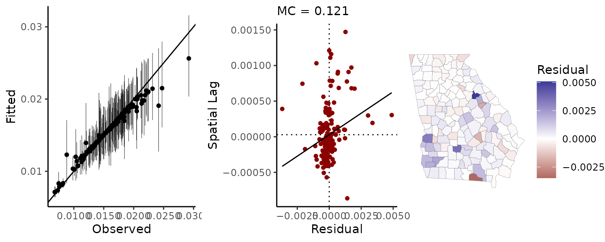
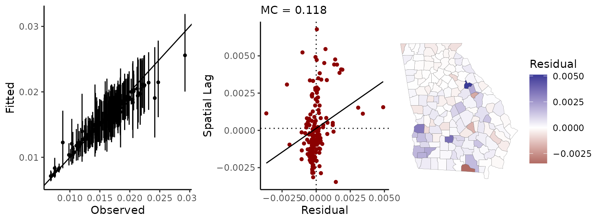
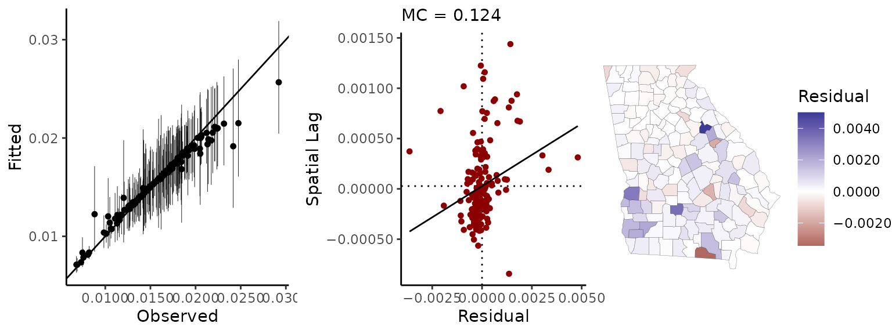

Measuring, visualizing, and simulating spatial autocorrelation
Connor Donegan
measuring-sa.RmdThis vignette covers basic usage of the geostan package for measuring, visualizing, and simulating spatial autocorrelation (SA) or systematic spatial patterns in the level of a variable. Positive SA is the tendency for nearby values to be more similar than distant values (i.e. clustering) while negative SA is the tendency for values to be located some distance away from others like them (i.e. repulsion).
Getting started
Start by loading the geostan, sf, and ggplot2 packages into your R environment along with the ohio dataset:
geostan::ohio is a simple features object with county-level Presidential vote shares compiled by the MIT Election Data and Science Lab (2018) and joined to some county characteristics. The data was analyzed using geostan in Donegan et al. (2020). The dataset includes growth in the Republican (GOP) share of Presidential votes from the average preceding elections (2000-2012) to 2016 (gop_growth). Thus positive values of gop_growth indicate places where Trump improved upon the previous GOP performance and negative values show where he performed worse:
ggplot(ohio) +
geom_sf(aes(fill = gop_growth)) +
scale_fill_gradient2() +
theme_void()
Spatial weights matrices
All of the spatial diagnostics and models in geostan require a spatial connectivity matrix. You can make a connectivity matrix by passing a SpatialPolygons or sf object to geostan::shape2mat. (It mainly wraps around a couple functions from the spdep package). The second argument to geostan::shape2mat is the scheme for encoding connectivity—“B”, the default, produces a binary scheme (1 for neighbors, else 0) and “W” is row-standardized.
The geostan::shape2mat function can also create space-time connectivity matrices which many geostan functions will accept without any further modification—but you must ensure your data is properly ordered in space and time to match the connectivity matrix.
Measuring spatial autocorrelation
geostan has the following functions for measuring spatial autocorrelation:
- the Moran scatter plot
geostan::moran_plot. - the Moran coefficient
geostan::mc, - local indicator of spatial autocorrelation
geostan::lisa, - the APLE statistic
geostan::aple(Approximate Profile Likelihood Estimator of the spatial autocorrelation parameter from a simultaneous autoregressive model). Note that theapleis an approximation that is only valid for relatively small sample sizes.1
When using the row-standardized spatial weights matrix, the Moran plot will show the original values y after being centered—y.c = y - mean(y)—plotted against the mean spatially-lagged value (W %*% y.c):2
y <- ohio$gop_growth
moran_plot(y, W)
#> `geom_smooth()` using formula 'y ~ x' If instead, we use the binary coding scheme for the spatial weights matrix C then the y-axis (C * y.c) would show the sum of spatially-lagged values.
The Moran plot is divided into quadrants, which lends points in each quadrant the following interpretation:
- Points in the upper-right (1st) quadrant are above-average values surrounded by above-average values (positive SA);
- Points in the upper-left (2nd) quadrant are below-average values surrounded by above-average values (negative SA);
- Points in the bottom-left (3rd) quadrant are below-average values surrounded by below-average values (positive SA);
- Points in the bottom-right (4th) quadrant are above-average values surrounded by below-average values (negative (SA).
Each point is thus a local indicator of spatial autocorrelation (LISA) which are often mapped to identify areas of high or low SA. Following Anselin (1995, Equation 7), the LISA values are simply the product of the value on the x-axis with their corresponding y-axis value; and the mean of all LISAs is proportionate to the Moran coefficient.
Lisa <- lisa(y, W)
mean(Lisa)
#> [1] 0.5220273
mc(y, W)
#> [1] 0.528
ggplot(ohio) +
geom_sf(aes(fill = Lisa)) +
scale_fill_gradient2() +
theme_void()
geostan::aple requires the row-standardized spatial weights matrix, and arguably provides a more intuitive estimate of the degree of SA since the SAR model can be used to generate spatially autocorrelated data:
aple(y, W)
#> [1] 0.796Again, for large number of observations the APLE approximation will break down.
Simulating spatially autocorrelated data
You can simulate data from the simultaneous autoregressive model (SAR) using the geostan::sim_sar function and providing, at minimum, a row-standardized spatial weights matrix w and the degree of SA, rho:
x <- sim_sar(w = W, rho = 0.7)
aple(x, W)
#> [1] 0.681
ggplot(ohio) +
geom_sf(aes(fill = x)) +
scale_fill_gradient2() +
theme_void() By default
By default geostan::sim_sar will return a single n-length draw from the multivariate normal model (with covariance matrix specified following the SAR model). By setting the argument \(m\) to an integer value greater than one sim_sar will return an \(m \times n\) matrix, with each row holding an n-length draw from the SAR model:
Spatial diagnostics with sp_diag
geostan::sp_diag provides visual diagnostics for spatial data:
sp_diag(y, ohio)
#> `stat_bin()` using `bins = 30`. Pick better value with `binwidth`.
#> `geom_smooth()` using formula 'y ~ x'
It can also be used for analysis of model residuals. Here we model the mean and variance of gop_growth using a Gaussian probability distribution: \[\begin{equation}
y \sim \text{Gaussian}(\mu, \sigma).
\end{equation}\]
Calculating a probability distribution for parameters \(\mu, \sigma\) requires an initial or prior probability be specified for each. By Bayes’ theorem, the probability of parameters \(\theta\) conditional on the latest data \(D\) and our initial information \(I\) is proportional to the product of two terms: first, the probability of the observations conditional on \(\theta\) and \(I\), and second, the initial probability of \(\theta\) conditional on \(I\) alone: \[\begin{equation} p(\theta | D, I) \propto p(D | \theta,I) p(\theta|I). \end{equation}\]
which is often stated as3
\[\begin{equation} \text{Posterior probability} \propto \text{Likelihood} \times \text{Prior probability} \end{equation}\]
Here we will just use the priors provided by geostan (as printed out to the console):
fit <- stan_glm(gop_growth ~ 1, data = ohio, refresh = 0, cores = 1)
#>
#> *Setting prior parameters for intercept
#> Gaussian
#> Location: 0
#> Scale: 12.488757925385
#>
#> *Setting prior parameters for sigma
#> Student's t
#> Degrees of freedom: 10
#> Location: 0
#> Scale: 12.488757925385To examine the residuals, \(y - \hat{\mu}\), pass the model to geostan::sp_diag:
sp_diag(fit, ohio)
#> `stat_bin()` using `bins = 30`. Pick better value with `binwidth`.
#> `geom_smooth()` using formula 'y ~ x'
The geostan model returns samples drawn from the posterior probability distribution of \(\mu\) (fitted values), which can be accessed using fitted(fit). Here \(\hat{\mu}\) represents the mean of the posterior distribution of the parameter \(\mu\). Thus the following code reproduces the above results, but more transparently:
mu <- fitted(fit)
deviations <- y - mu$mean
sp_diag(deviations, ohio)
#> `stat_bin()` using `bins = 30`. Pick better value with `binwidth`.
#> `geom_smooth()` using formula 'y ~ x'
## also the same:
## mu <- as.matrix(fit, pars = "fitted")
## mu <- apply(mu, 2, mean)
## deviations <- y - mu
## sp_diag(deviations, ohio)Estimating and visualizing SA patterns
The geostan package also provides the geostan::spatial method for extracting the spatial trend component from fitted spatial models (geostan::stan_esf, geostan::stan_icar, and geostan::stan_car). Continuous data can be modeled using eigenvector spatial filtering (ESF) models. ESF models use a linear combination of the eigenvectors \(E\) of a transformed spatial connectivity matrix \(C\) to identify SA patterns in the data. Each eigenvector contains a distinct map pattern which is indexed by the Moran coefficient (proportional to each respective eigenvalue). geostan assigns a horseshoe prior model to the parameter vector \(\beta_{E}\), reflecting our initial expectation that a relatively small number of eigenvectors will be sufficient to describe the SA patterns in the data. The result is a spatially varying mean \(\mu_i\):
\[\begin{equation} \mu_i = \alpha + E_i * \beta_{EV} \end{equation}\]
fit.esf <- stan_esf(gop_growth ~ 1, data = ohio, C = C, refresh = 0, cores = 1)
#>
#> *Setting prior parameters for intercept
#> Gaussian
#> Location: 0
#> Scale: 12.488757925385
#>
#> *Setting prior parameters for sigma
#> Student's t
#> Degrees of freedom: 10
#> Location: 0
#> Scale: 12.488757925385
#>
#> *Setting prior parameters for rhs
#> Global shrinkage prior (scale_global): 1
#> Slab degrees of freedom: 15
#> Slab scale: 29.1218447680832
sp_diag(fit.esf, ohio)
#> `stat_bin()` using `bins = 30`. Pick better value with `binwidth`.
#> `geom_smooth()` using formula 'y ~ x' The residuals are no longer auto-correlated (a small negative MC value is expected). Instead, the autocorrelation structure has been shifted to the spatial filter. We can extract the spatial filter with the spatial method:
mu.esf <- spatial(fit.esf)$mean
ggplot(ohio) +
geom_sf(aes(fill = mu.esf)) +
scale_fill_gradient2() +
theme_void()
References
Anselin, Luc (1995). “Local indicators of spatial association—LISA.” Geographical Analysis 27, no. 2: 93-115.
Berliner, L. Mark (1996). “Hierarchical Bayesian time-series models” in Maximum Entropy and Bayesian Methods, Eds. Hanson, Kenneth M. and Silver, Richard N. Springer Netherlands.
Bivand R, Wong DWS (2018). “Comparing implementations of global and local indicators of spatial association.” TEST, 27(3), 716–748. https://doi.org/10.1007/s11749-018-0599-x.
Chun, Yongwan, and Daniel A. Griffith (2013). Spatial statistics and geostatistics: theory and applications for geographic information science and technology. Sage.
Cressie, Noel and Wikle, Christopher K. (2011). Statistics for Spatio-Temporal Data. Wiley.
Donegan, Connor, Yongwan chun and Amy E. Hughes (2020). “Bayesian estimation of spatial filters with Moran’s eigenvectors and hierarchical shrinkage priors.” Spatial Statistics 38: 100450. https://osf.io/fah3z/ Data and code: https://github.com/ConnorDonegan/ESF.
Jeffreys, Sir Harold (1961). Theory of Probability. Oxford University Press.
Li, Hongfei, Catherine A. Calder, and Noel Cressie (2007). “Beyond Moran’s I: testing for spatial dependence based on the spatial autoregressive model.” Geographical Analysis 39, no. 4: 357-375.
MIT Election Data and Science Lab (2018). “County Presidential Election Returns 2000-2016”, URL:https://doi.org/10.7910/DVN/VOQCHQ, Harvard Dataverse, V1.
As a rough rule of thumb, if you have to wait for the
apleto calculate, you should be using a different measure.↩Using centered data \(y_c\) and its spatial lag \(\tilde{y_c} = W * y_c\), the Moran coefficient is equal to a scale factor \(\frac{n}{1'C1}\) times \(\hat{\beta}\) from a bivariate regression of the spatial lag of \(y_c\) on itself, where \(1\) a column vector of ones (i.e. the denominator is the sum of the row sums of the connectivity matrix.) For a row-standardized matrix \(\frac{n}{1'C1} = 1\). Moran’s I can be written as \(I = \frac{n}{1'C1}\frac{Cov(y_c, \tilde{y_c})}{Var(y_c)} = \frac{n}{1'C1}\hat{\beta}\).↩
For more complex models such as the spatial models availabe in geostan, a more natural notation is Posterior probability \(\propto\) [Process model] \(\times\) [Parameter model], which recognizes that the prior can itself be a complex model. This generalizes further to incorporate models of observational error: Posterior probability \(\propto\) [Data model] \(\times\) [Process model] \(\times\) [Parameter model] (Berliner 1996; Cressie and Wikle 2011), which is implemented in geostan models through the
MEargument.↩